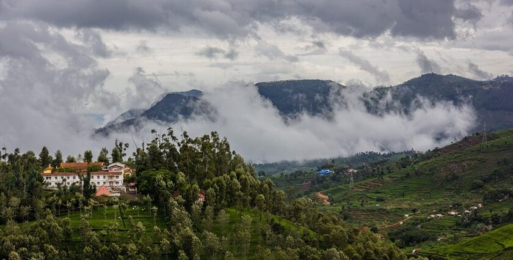
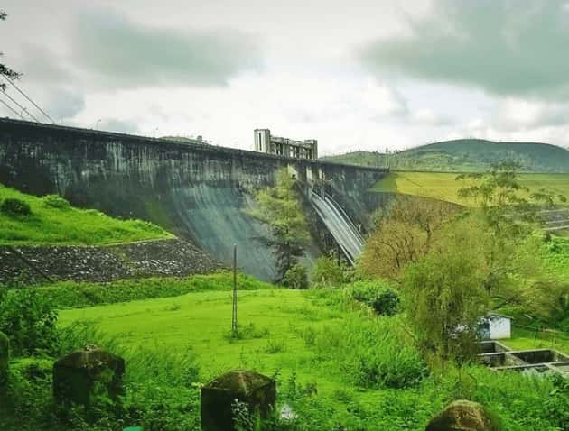
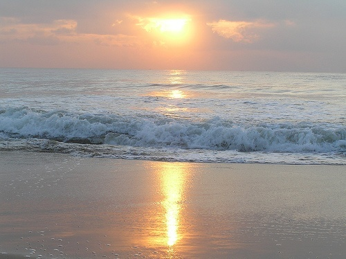
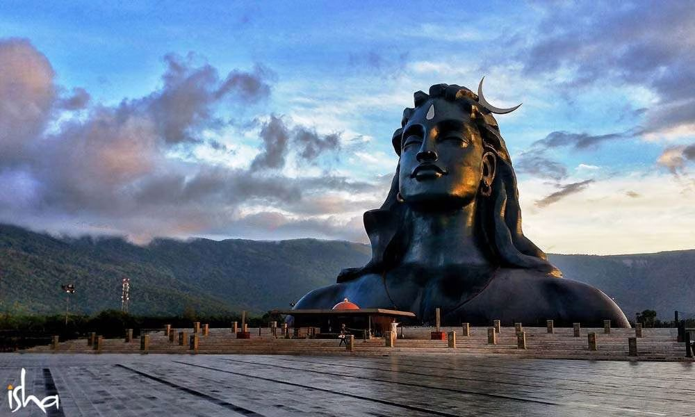
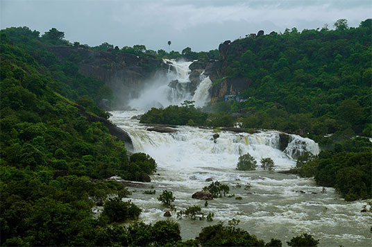
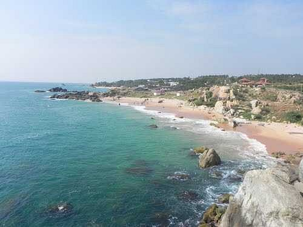
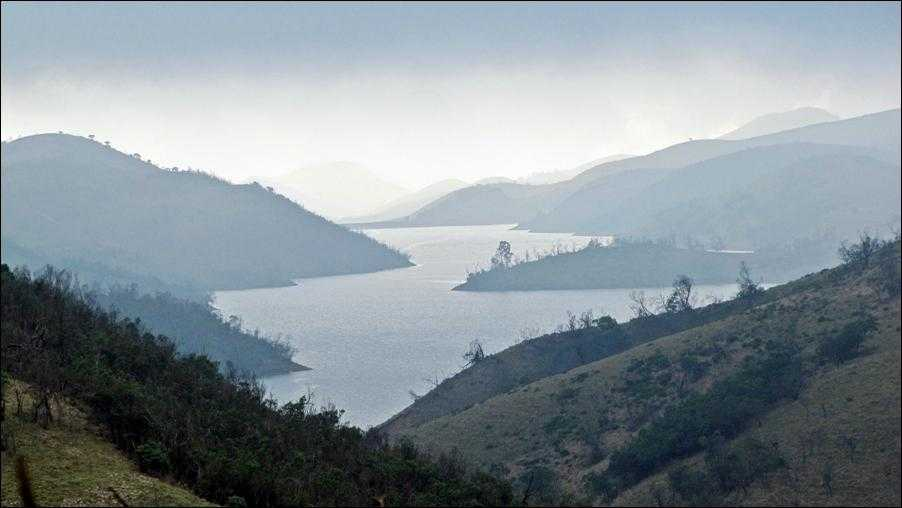
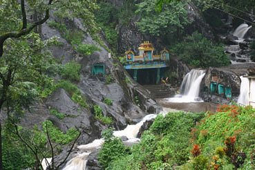
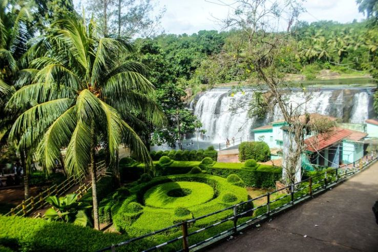
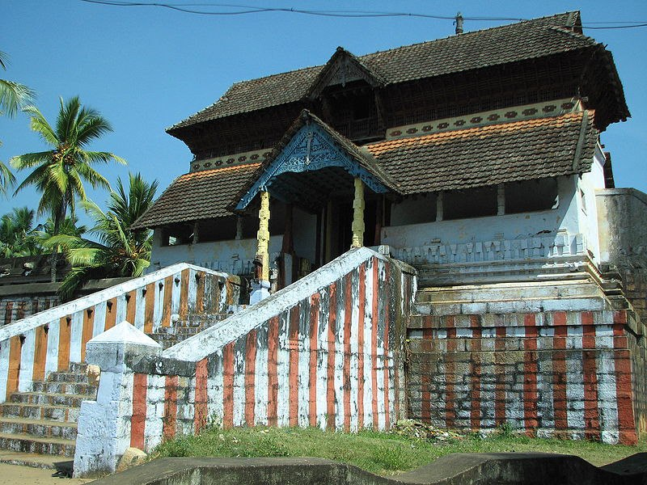

Coonoor, a hill station in Tamil Nadu, offers several attractions and activities. Top spots include
Sim's Park,
Dolphin's Nose, Lamb's Rock, and Catherine Falls. Visitors can also enjoy the Nilgiri
Mountain
Railway, explore tea
plantations, and trek through the valleys and hills.
1. Sim's Park:
A botanical garden with a diverse collection of plants and trees, perfect for nature lovers.
2. Dolphin's Nose:
A viewpoint offering panoramic views of the Nilgiri Hills and Catherine Falls.
3. Lamb's Rock:
Another viewpoint with stunning views of the Coimbatore Plains and surrounding forests.
4. Catherine Falls:
A picturesque waterfall surrounded by lush greenery, accessible for viewing.
5. Nilgiri Mountain Railway:
A scenic toy train ride through the mountains, connecting Coonoor to Ooty and Mettupalayam.
6. Tea Gardens and Trekking:
Coonoor is known for its tea plantations and offers opportunities for trekking through the valleys
and hills.

Sholayar Dam, located on the Chalakudy River, is a significant structure for hydroelectric power
generation and water
management in the region. Its key features include its role as a major reservoir for the
Parambikulam-Aliyar Project,
its substantial concrete construction, its scenic location, and its contribution to both irrigation and
power
generation.
1. Hydroelectric Power Generation:
The dam is part of the Sholayar Hydroelectric Project, which includes the main dam, flanking dam, and
saddle dam,
creating a single reservoir.
2. Part of the Parambikulam-Aliyar Project:
The reservoir formed by Sholayar Dam is a crucial component of the Parambikulam-Aliyar Project, a major
inter-state
water sharing scheme. The dam's water is also diverted to the power house located on the bank of
Anakkayam stream,
generating electricity.
3. Scenic Location and Tourist Attraction:
The dam is situated in a picturesque area, surrounded by natural beauty and lush green forests, making
it a popular
tourist destination.
4. Water Management:
Sholayar Dam plays a vital role in water management for the region, acting as a reservoir for irrigation
and water
supply, according to Justdial.
5. Concrete Gravity Dam:
The dam is a concrete gravity structure, known for its robust design and engineering, standing as a
testament to the
construction techniques of its time, notes Tripadvisor.

Marina Beach, a significant landmark in Chennai, is known for its long sandy stretch, historical
monuments, and vibrant
atmosphere. It's the second longest urban beach in the world, offering
a place for recreation,
relaxation, and cultural
experiences.
1. Second Largest Urban Beach:
Marina Beach is renowned for being the second longest urban beach globally, stretching
along the Bay
of Bengal.
2. Historical Significance:
The beach is lined with statues and memorials of notable figures from Tamil Nadu's history,
including Mahatma Gandhi,
C.N. Annadurai, and M.G. Ramachandran.
3. Popular for Recreation:
Visitors enjoy various activities like jogging, kite flying, horse riding, and exploring the
aquarium.
4. Scenic Views:
Marina Beach offers stunning views of the sunrise and sunset, making it a popular spot
for
photography enthusiasts and
those seeking tranquility.
5. Vibrant Atmosphere:
The beach is a bustling hub with local vendors, street food stalls, and cultural events,
creating a
lively and energetic
atmosphere.

The Isha Yoga Center in Coimbatore is known for its serene environment and spiritual offerings. Five
important points to
note are: the Dhyanalinga, a powerful energy center for meditation; the Adiyogi statue, a massive
sculpture symbolizing
the origin of yoga; the Linga Bhairavi temple, dedicated to feminine energy;
1. Dhyanalinga:
This is a powerful meditative space designed to help individuals cultivate stillness and awareness. It's
a unique and
consecrated space where visitors can spend time in quiet contemplation.
2. Adiyogi Shiva Statue:
A 112-foot tall bust of the Hindu deity Shiva, this statue is the world's largest bust sculpture and is
a prominent
symbol of yoga and spirituality. The height is significant, representing the 112 ways to liberation in
yogic
culture.
3. Linga Bhairavi Temple:
This temple is dedicated to the feminine form of divinity and is known for its distinctive architecture
and intricate
carvings. It is a place where visitors can connect with the feminine energy.
4. Theerthakunds (Suryakund & Chandrakund):
These are energized water bodies, with Suryakund for men and Chandrakund for women, where visitors can
take a dip to
rejuvenate themselves. They are believed to have healing properties and are a popular part of the Isha
experience.
5. Free Yoga Sessions:
The center offers free introductory yoga sessions like Isha Kriya and Yoga Namaskaram, making it
accessible to beginners
who want to explore the practice.

Agasthiyar Falls, also known as Papanasam Falls, is a popular tourist and pilgrimage destination
in
Tamil Nadu, India,
known for its scenic beauty and religious significance.
1. Location and Geography:
Located in the Western Ghats, near Papanasam town, the falls are formed by the Thamirabarani
River
and drop from a
height of about 120 meters. The river then flows down to the plains of
Papanasam.
2. Religious Significance:
The falls are named after the sage Agasthiyar, who is said to have prayed at this spot to witness
the divine wedding of
Shiva and Parvati. Papanasam, meaning "annihilation of sins," is a name
derived from the belief that
bathing in the
falls' waters absolves one of their sins.
3. Tourist Attraction:
The falls are a popular tourist spot, attracting visitors with its natural beauty and religious
importance. The area
offers opportunities for trekking, nature walks, and enjoying the scenic views.
4. Legend and Mythology:
A popular legend tells of Sage Agasthiyar coming to Papanasam to witness Shiva and Parvati's
wedding
after they had
gathered too many people. Pleased with his devotion, Shiva and Parvati
appeared to him at the
location.
sins are absolved.
5. Accessibility and Facilities:
The falls are easily accessible by road, with buses available from Tirunelveli to Papanasam. While
there are no food or
drink stands directly at the falls, visitors are permitted to bring their own food
and drinks. There
are also handrails
installed for safety near the waterfall.

Sanguthurai Beach, located near Kanyakumari, is known for its serene and tranquil atmosphere, making it
a popular spot
for relaxation and enjoying the sunset. It features a unique conch sculpture and offers views of the
Vivekananda Rock
Memorial and Thiruvalluvar Statue. The beach is relatively less crowded, making it ideal for those
seeking a peaceful
escape.
1. Tranquility and Relaxation:
Sanguthurai Beach is renowned for its calm and peaceful ambiance, providing a serene environment for
visitors to unwind
and enjoy the natural beauty.
2. Views of Vivekananda Rock Memorial and Thiruvalluvar Statue:
From the beach, you can get a clear view of the iconic Vivekananda Rock Memorial and the Thiruvalluvar
Statue, which are
major attractions in Kanyakumari.
3. Unique Conch Sculpture:
A distinctive feature of the beach is the large conch sculpture, believed
to be from the
Chola period, adding a historical and cultural element to the site.
4. Ideal for Sunset Views:
The beach is particularly popular for witnessing breathtaking sunsets, with the sun's golden hues
reflecting on the
water creating a picturesque scene.
5. Less Crowded and Clean:
Compared to some other beaches in Kanyakumari, Sanguthurai Beach tends to be less crowded, offering a
more private and
relaxed experience.

Upper Bhavani Lake, located in Ooty, is a picturesque reservoir known for its scenic beauty and
ecological significance.
It's situated within the Nilgiri Biosphere Reserve and is a popular spot for
nature lovers and those
seeking
tranquility. Key highlights include its breathtaking views, diverse
flora and fauna, and
opportunities for birdwatching
and wildlife spotting.
1. Scenic Beauty:
The lake offers stunning views of the surrounding hills and lush greenery, making it a popular
spot
for photography and
nature appreciation.
2. Ecological Importance:
It is part of the Nilgiri Biosphere Reserve, a UNESCO World Heritage Site, known for its rich
biodiversity and
conservation efforts.
3. Wildlife Spotting:
The area is home to various wildlife species, including the endangered Nilgiri tahr and numerous
bird species, making it
an ideal location for wildlife enthusiasts.
4. Tranquility and Peace:
The lake provides a peaceful and serene environment, offering a break from the hustle and bustle
of
city life.
5. Restricted Access:
Entry to the lake area is managed by the forest department, and prior permission is usually
required, ensuring the
preservation of the natural environment.

Kalhatty Falls, also known as Kalahasti Falls, is a scenic waterfall located near Ooty, Tamil Nadu,
India, known for its
rich biodiversity and trekking opportunities. It's a popular destination for nature lovers, wildlife
enthusiasts, and
those seeking a peaceful escape.
1. Location and Geography:
The falls are situated on the Sigur Plateau, approximately 13 km from Ooty, on the Ooty to Mysore Road.
They cascade
down from a height of about 120-400 feet, offering breathtaking views.
2. Flora and Fauna:
Kalhatty Falls is renowned for its rich biodiversity. Visitors may spot various wildlife including deer,
bison, and even
elephants, especially near the water source. Birdwatchers will also find the area appealing, with
numerous bird species
inhabiting the surrounding forests.
3. Trekking and Accessibility:
While there's a road leading close to the falls, reaching the base of the waterfall involves a
3-kilometer trek from
Kalhatty village.
4. Best Time to Visit:
The best time to visit Kalhatty Falls is during the post-monsoon and winter months, from October to
March, when the
weather is pleasant and the water flow is optimal.
5. Activities and Amenities:
Besides enjoying the scenic views and trekking, visitors can engage in activities like birdwatching,
photography, and
picnicking. Basic amenities like parking, viewing platforms, and restroom facilities are available to
enhance the
visitor experience.

Thiruparappu Waterfalls, a popular tourist spot in Kanyakumari, offers a scenic cascade
and a
tranquil environment. It
is known for its rocky riverbed and the 50-foot drop of the
Kodayar river. Key attractions include a
swimming pool for
children, a nearby Shiva temple,
and the opportunity for boating.
1. Scenic Beauty and Tranquility:
The waterfall and its surrounding lush greenery create a picturesque and peaceful atmosphere,
making
it ideal for
relaxation and photography.
2. Man-made Waterfall:
The waterfall is a result of a weir constructed on the Kodayar river, diverting water to paddy
fields and creating the
cascade at Thiruparappu.
3. Swimming and Boating:
A swimming pool for children is available, and the pool at the base of the falls is a popular
spot
for bathing and
frolicking in the water. Boating is also an option in the surrounding waters.
4. Nearby Shiva Temple:
A temple dedicated to Lord Shiva, enclosed by fortifications, is located near the falls and is
a
significant religious
site.
5. Accessibility and Facilities:
The falls are accessible by road from Kanyakumari, Thiruvananthapuram, and other nearby
cities.
Facilities include
parking, changing areas, and food stalls.

The Adikesava Perumal Temple in Thiruvattar, Kanyakumari district, is a significant Hindu temple
dedicated to Lord
Vishnu and one of the 108 Divya Desams. It's known for its unique architecture, combining Dravidian and
Kerala styles,
and the 22-foot-long reclining idol of Lord Vishnu. The temple is also closely linked to the Sri Anantha
Padmanabhaswamy
Temple in Thiruvananthapuram.
1. Historical Significance:
The temple is believed to be ancient, with some traditions claiming it's over 2500 years old and even
mentioned in the
Padma Purana.
2. Unique Architecture:
The temple showcases a blend of Dravidian and Kerala architectural styles, featuring wooden pillars,
doors, and roofs.
The outer corridor has 224 stone pillars.
3. Reclining Idol:
The presiding deity, Adi Kesava Perumal, is a 22-foot-long idol of Lord Vishnu in a reclining posture
(Bujanga Sayana)
on a serpent (Adisesha). The idol is viewed through three openings in the sanctum sanctorum.
4. Geographical Location:
The temple is surrounded by three rivers – Thamirabharani, Kothai, and Pahrali – and is situated on an
elevated area,
with entrances on both the east and west sides.
5. Close Association with Thiruvananthapuram:
The temple is closely linked to the Sri Anantha Padmanabhaswamy Temple in Thiruvananthapuram, with the
deity at the
Thiruvananthapuram temple believed to be facing the Thiruvattar temple.